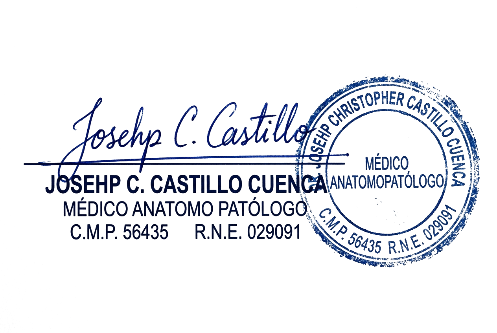

JC PATH LAB
División Especializada en Patología de Partes Blandas & SarcomasA: Médicos Cirujanos Oncólogos, Traumatólogos Ortopédicos y Comités de Tumores
Referencia de Alta Complejidad en Biopsias por Tru-cut, Resecciones Compartimentales y Márgenes
Estimados Colegas y Equipos Quirúrgicos: La patología de partes blandas representa uno de los retos diagnósticos más demandantes de la oncología moderna. La coexistencia de más de un centenar de subtipos histológicos morfológicamente superpuestos exige una integración estricta entre macroscopía minuciosa, graduación histológica de la FNCLCC, mapeo de márgenes compartimentales y un panel inmunohistoquímico / molecular dirigido.
JC PATH LAB pone a su disposición nuestra infraestructura especializada como centro de interconsulta en tumores de tejidos blandos y sarcomas del adulto y pediátricos. Aplicamos con máxima rigurosidad los criterios diagnósticos de la 5.ª Edición de la Clasificación de la OMS y las guías internacionales NCCN / ESMO para el manejo óptimo de piezas operatorias y biopsias cilíndricas tru-cut.
Reconocemos que en la cirugía de sarcomas, la distancia milimétrica real del tumor a la fascia profunda no comprometida o al haz neurovascular determina la indicación de radioterapia adyuvante o amputación. Por ello, garantizamos un muestreo tridimensional orientado con tintas, determinación exacta de R0/R1/R2 y soporte continuo en comités multidisciplinarios de tumores (Tumor Boards).
Mapeo Fascial Tridimensional
Inking multiculor de márgenes quirúrgicos (adventicia vascular, fascia profunda, músculo esquelético y dermis) con medición exacta en milímetros.
Graduación Estricta FNCLCC
Score francés estandarizado: cuantificación de mitosis en 10 HPF consecutivos, porcentaje real de necrosis tumoral y grado de diferenciación.
Digitalización WSI Multicéntrica
Whole Slide Imaging en tiempo real para presentación directa en sus ateneos médicos y discusión clínica sin demoras por traslados físicos de láminas.
Participamos de manera presencial o remota en los comités oncológicos de su clínica u hospital para correlacionar la resonancia magnética prequirúrgica con las secciones de patología, optimizando el tratamiento complementario postoperatorio del paciente.

Dr. Joseph C. Castillo Cuenca
Médico Especialista en Anatomía Patológica C.M.P. 56435 • R.N.E. 029505 Director Médico — JC PATH LABJC PATH LAB
Sistema de Graduación FNCLCC y Linajes Mesenquimales (OMS)• Score 1: Sarcomas que asemejan estrechamente tejido adulto normal (Liposarcoma bien diferenciado).
• Score 2: Sarcomas con tipo histológico certero (Leiomiosarcoma, Liposarcoma mixoide).
• Score 3: Sarcomas indiferenciados, pleomórficos (UPS) o sinoviales bifásicos/pobremente diferenciados.
• Score 1: 0 a 9 mitosis / 10 HPF.
• Score 2: 10 a 19 mitosis / 10 HPF.
• Score 3: 20 o más mitosis / 10 HPF.
• Score 0: Ausencia de necrosis tumoral.
• Score 1: Necrosis tumoral microscópica <50% de la superficie tumoral.
• Score 2: Necrosis tumoral confluente o masiva ≥50%.
| Linaje Tisular | Entidades Histológicas Principales | Criterio Arquitectural y Patognomónico |
|---|---|---|
| Tumores Adipocíticos |
• Lipoma convencional. • Tumor Lipomatoso Atípico / WDLPS. • Liposarcoma Mixoide. • Liposarcoma Pleomórfico y Desdiferenciado. |
Variación en tamaño de adipocitos, atipia nuclear en septos fibrosos e hiperneocromasia estromal. En mixoide: red capilar en 'alambre de gallinero' y lipoblastos en anillo de sello sobre matriz estromal mixoide. |
| Fibroblásticos & Miofibroblásticos |
• Fascitis nodular (USP6). • Fibromatosis tipo desmoide. • Dermatofibrosarcoma protuberans (DFSP). • Sarcoma Pleomórfico Indiferenciado (UPS). |
En desmoide: fascículos largos y amplios de fibroblastos uniformes que infiltran músculo estriado sin atipia marcada. En DFSP: patrón estoriforme en 'rueda de carreta' con infiltración grasa en panal de abejas. |
| Músculo Liso & Vasculares |
• Leiomioma vs Leiomiosarcoma. • Angiomas, Epitelioide hemangioendotelioma. • Angiosarcoma óseo y de partes blandas. |
En leiomiosarcoma: fascículos entrecruzados en ángulo recto con núcleos en 'cigarro habano', atipia nuclear pleomórfica y mitosis atípicas. En angiosarcoma: canales vasculares anastomosados con atipia endotelial marcada. |
| Vaina Nerviosa & GIST |
• Schwannoma (Antoni A/B, Verocay). • Neurofibroma plexiforme. • MPNST (Sarcoma vaina nerviosa periférica). • GIST (Tumor estromal gastrointestinal). |
Cuerpos de Verocay con empalizada nuclear en Schwannoma. En GIST: células fusiformes o epitelioides en fascículos arremolinados; correlación estricta con índice mitótico por 5 mm² y tamaño. |
JC PATH LAB
Inmunohistoquímica Mesenquimal, Soporte Multidisciplinario y Tiempos| Biomarcador IHC | Patrón de Tinción / Especificidad | Diagnóstico Diferencial Crítico |
|---|---|---|
| MDM2 CDK4 | Nuclear difusa (correlato con amplificación 12q13-15) | WDLPS / Liposarcoma Desdiferenciado (+) vs Lipoma benigno (-) y sarcomas pleomórficos primarios. |
| STAT6 | Nuclear fuerte y difusa (fusión NAB2::STAT6) | Tumor Fibroso Solitario (SFT) (+) vs Meningioma, Schwanoma y Sarcoma Sinovial (-). |
| Beta-Catenina | Translocación aberrante intranuclear | Fibromatosis Desmoide (+) vs Cicatriz hipertrófica, Fascitis nodular y Fibrosarcoma (-). |
| CD34 | Membranal citoplasmática difusa | DFSP (+ difuso), GIST (+), SFT (+), Hemangiopericitoma vs Leiomiosarcoma (-). |
| TLE1 | Nuclear difusa (>90% de células tumorales) | Sarcoma Sinovial (+) vs Tumor de vaina nerviosa periférica (MPNST) y carcinomas escamosos. |
| CD117 DOG1 | Membrana y paranuclear en 'dot' (c-kit/anoctamin-1) | GIST (+ en >95% de casos) vs Leiomioma peritoneal (-), Schwannoma GI (-) y Desmoide (-). |
| H3K27me3 | Pérdida completa de la expresión nuclear | MPNST de alto grado (pérdida de trimetilación) vs Neurofibroma y Schwannoma benigno (retenida). |
Muestreo Macroscópico Estandarizado
Realizamos 1 bloque por centímetro de tumor más muestreo exhaustivo de áreas de transición, necrosis y relación estrecha con márgenes fasciales.
Correlación con RM: Cotejamos la imagen radiológica previa al corte de la pieza para localizar el lecho de la biopsia percutánea anterior.